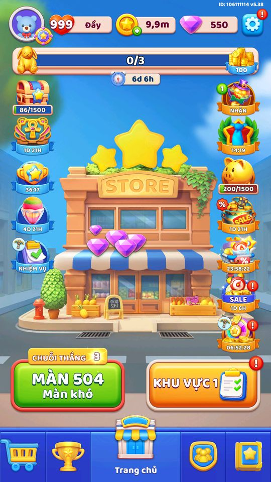

Độ khó màn (Normal/Hard/Super)
Mỗi màn một mức khó, do bảng server quyết định và ảnh hưởng thưởng pass.
Mô tả
- Mỗi màn được gán một trong ba mức: Normal, Hard, VeryHard (Super Hard).
- Mức khó không nằm cứng trong màn mà do bảng Level_DifficultSheet (ánh xạ level -> diff) nạp từ server quyết định.
- Có hai quy tắc đặc biệt chèn lên: trong Super League độ khó đi theo vị trí mỗi khối 10 màn, và màn tân thủ 5/6 bị ép theo thử nghiệm A/B.
- Độ khó quyết định số chìa Battle Pass nhận được và ngưỡng fail-safe (nới khó khi thua nhiều).
Thiết kế chi tiết
Tóm tắt thiết kế
Code Độ khó mỗi màn từ Level_DifficultSheet (server); Super League dùng quy tắc vị trí: level % 10 == 9 → Super Hard, % 10 == 4 → Hard.
Playtest Home 28/10: nút Màn 504 — Màn khó (đuôi 4), đúng cùng nhịp đuôi 4/9 của Block Out. Một điểm dữ liệu nên chưa khẳng định cho mọi màn chính.
Luồng người chơi từng bước
- Hình ảnhGiao diện PlaytestẢnh liên quan từ playtest 28/10 (và ảnh 07/10 nếu có).

Màn 504: Màn khó 
07/10: nhãn độ khó trước màn

Bảng tổng hợp mọi tính năng đã làm chi tiết: GoodsSort_ThietKeChiTiet.xlsx.
Còn thiếu / chưa xác minh
Mở khóa & điểm vào
Luôn hoạt động từ màn 1; các màn Hard/VeryHard chỉ xuất hiện khi Level_DifficultSheet (server) đánh dấu. Bằng chứng: LevelDataController.GetLevelDifficult đọc Level_DifficultSheet.Get(level).
Điểm vào:
- Tự tính khi vào màn (GenLevelController / LevelController)
- Badge/nhãn độ khó trên UI màn chơi
- Khi gửi kết quả màn kèm độ khó cho server (LevelDataController.GameCompleted / LevelOptimizeManager)
Cách hoạt động
- LevelDataController.GetLevelDifficult(level) chạy theo thứ tự ưu tiên.
- Nếu đang trong Super League: level%10==9 -> VeryHard, level%10==4 -> Hard, còn lại Normal.
- Nếu không ở Super League và abTestFTUE >= 0: màn 5 -> Hard, màn 6 -> Normal (ép cho đoạn tân thủ).
- Mặc định: nếu Level_DifficultSheet chứa level thì trả về diff của sheet; nếu không thì Normal.
- GetLevelDifficultString đổi sang 'EASY'/'HARD'/'VERY_HARD' và gửi kèm GameCompleted cho LevelOptimizeManager tinh chỉnh server.
Luồng chi tiết theo code
Khi cần biết độ khó, LevelDataController.GetLevelDifficult(level) chạy theo thứ tự: (1) Nếu đang trong Super League (SuperLeagueDataController.IsJoined): độ khó theo vị trí trong khối 10 màn — level%10==9 -> VeryHard(2), level%10==4 -> Hard(1), còn lại Normal(0). (2) Nếu không ở Super League và RemoteConfig.abTestFTUE >= 0: màn 5 -> Hard(1), màn 6 -> Normal(0) (ép cho đoạn tân thủ). (3) Mặc định: nếu Level_DifficultSheet chứa level thì trả về Level_DifficultSheet.Get(level).diff; nếu không có thì Normal(0). GetLevelDifficultString(level) chuyển sang chuỗi 'EASY'/'HARD'/'VERY_HARD' để log. Độ khó cũng được truyền vào LevelDataController.GameCompleted và dùng ở GetNumFailApplyFailSafe để tra bảng FailSafeSheet.
Ảnh chụp màn hình
Phần thưởng
Chìa Battle Pass theo độ khó
| Mốc | Phần thưởng |
|---|---|
| Normal | 1 chìa (NormalLevelKeyCount) |
| Hard | 3 chìa (HardLevelKeyCount) |
| Super Hard | 5 chìa (SuperHardLevelKeyCount) |
Phần thưởng theo code
| Ngữ cảnh | Phần thưởng | Evidence |
|---|---|---|
| Thắng màn trong Master Pass | Cộng chìa pass theo AddKey (không phụ thuộc độ khó) có thể x2 khi IsX2Reward | MasterPassController.CompleteLevel; MasterPassController.AddKey (không có nhánh độ khó) |
Số liệu chính
(không có)
Ghi chú thiết kế
- Màn Hard/VeryHard cho nhiều chìa pass hơn — đáng chơi khi đang có Battle Pass.
- Thua nhiều lần một màn khó (từ màn 30) có thể kích hoạt fail-safe làm màn dễ hơn.
Use case (6)
Bấm vào từng use case để mở. Mở/đóng tất cả
UC-01 Xác định độ khó của màn hiện tại
Các bước- LevelDataController.GetLevelDifficult() gọi get_Level rồi GetLevelDifficult(level)
- Kiểm tra Super League, FTUE A/B, rồi tra Level_DifficultSheet
- Trả về LevelDifficult (Normal/Hard/VeryHard)
| Actor | System |
|---|---|
| Trigger | Vào màn hoặc cần tính thưởng/thống kê |
| Điều kiện | Đã biết số level |
| Kết quả | Mức độ khó dùng cho UI, thưởng pass, fail-safe, analytics |
| Quy tắc / số liệu | LevelDifficult: Normal=0, Hard=1, VeryHard=2; mặc định Normal khi sheet không có |
| Evidence | LevelDataController.GetLevelDifficult; enum LevelDifficult; Level_DifficultSheet.Get |
UC-02 Độ khó theo vị trí trong Super League
Các bước- Bỏ qua Level_DifficultSheet
- Tính level % 10
- level%10==9 -> VeryHard; level%10==4 -> Hard; còn lại Normal
| Actor | System |
|---|---|
| Trigger | Đang chơi màn thuộc Super League |
| Điều kiện | SuperLeagueDataController.IsJoined() = true |
| Kết quả | Mỗi khối 10 màn Super League có một màn Hard (vị trí 4) và một VeryHard (vị trí 9) |
| Quy tắc / số liệu | Suy trực tiếp từ pseudo-C: uVar21=2 nếu level%10==9, ngược lại = (level%10==4) |
| Evidence | LevelDataController.GetLevelDifficult (nhánh SuperLeagueDataController.IsJoined) |
UC-03 Ép độ khó cho màn tân thủ 5 và 6 theo A/B
Các bước- Nếu level == 5 -> trả Hard(1)
- Nếu level == 6 -> trả Normal(0)
| Actor | System |
|---|---|
| Trigger | Không ở Super League, abTestFTUE >= 0 |
| Điều kiện | RemoteConfig.abTestFTUE >= 0 |
| Kết quả | Đoạn FTUE có một cú 'dốc khó' cố định ở màn 5 để thử nghiệm giữ chân |
| Quy tắc / số liệu | Chỉ áp dụng khi abTestFTUE >= 0; giá trị abTestFTUE do server/AB |
| Evidence | LevelDataController.GetLevelDifficult (nhánh RemoteConfig.abTestFTUE) |
UC-04 Ghi độ khó vào analytics khi kết thúc màn
Các bước- GetLevelDifficultString(level) đổi diff thành 'EASY'/'HARD'/'VERY_HARD'
- LevelDataController.GameCompleted(..., difficulty) gửi kèm kết quả màn
- LevelOptimizeManager nhận để tối ưu độ khó phía server
| Actor | System |
|---|---|
| Trigger | Thắng hoặc thua màn |
| Điều kiện | - |
| Kết quả | Server có dữ liệu để tinh chỉnh độ khó theo phân khúc người chơi |
| Quy tắc / số liệu | Chuỗi log: Normal->EASY, Hard->HARD, VeryHard->VERY_HARD |
| Evidence | LevelDataController.GetLevelDifficultString; LevelDataController.GameCompleted; Falcon.Modules.LevelOptimize.LevelOptimizeManager |
UC-05 Đính chính: độ khó KHÔNG quyết định số chìa Master Pass
Các bước- MasterPassController.CompleteLevel() rồi AddKey(key) cộng chìa
- Không có nhánh theo độ khó trong MasterPassController (0 tham chiếu 'Difficult')
- Chìa có thể nhân đôi khi ResourceController.IsX2Reward
| Actor | System |
|---|---|
| Trigger | Thắng một màn trong lúc Master Pass đang chạy |
| Điều kiện | Master Pass active |
| Kết quả | Số chìa pass không phụ thuộc độ khó màn trong build này |
| Quy tắc / số liệu | MasterPassController không có GetKeyIncreaseCountByLevelDifficulty; không tồn tại MagicPassService/BlockPassConfigModel/NormalLevelKeyCount trong toàn bộ APK (grep RecoveredNative = 0 kết quả) |
| Evidence | MasterPassController.CompleteLevel; MasterPassController.AddKey; grep 'Difficult' trong MasterPassController.c = 0 |
UC-06 Độ khó ảnh hưởng ngưỡng fail-safe
Các bước- GetNumFailApplyFailSafe(level) lấy độ khó qua GetLevelDifficult
- Tra FailSafeSheet entry phù hợp với level rồi lấy failToActives[difficulty]
- IsApplyFailSafe so số lần thua với failToActives[difficulty]
| Actor | System |
|---|---|
| Trigger | Thua màn nhiều lần |
| Điều kiện | Màn >= ngưỡng áp dụng (levelApplyFailSafe_1 = 30) |
| Kết quả | Số lần thua cần để game 'nới' màn phụ thuộc độ khó |
| Quy tắc / số liệu | failToActives[] theo từng mức khó; giá trị do FailSafeSheet (server) |
| Evidence | LevelDataController.GetNumFailApplyFailSafe; LevelDataController.IsApplyFailSafe; FailSafeSheet.Get; RemoteConfig.levelApplyFailSafe_1 |
Cấu hình (7)
Gộp mọi nguồn: const trong code, JSON mặc định trong Resources, bảng static, storage key, AB test, cờ server.
| Nguồn | Key | Kiểu | Giá trị | Ý nghĩa | Nơi định nghĩa |
|---|---|---|---|---|---|
| code const | LevelDifficult | enum | Normal=0, Hard=1, VeryHard=2 | Ba mức độ khó của màn | enum LevelDifficult |
| code const | GetLevelDifficultString | map | Normal->EASY, Hard->HARD, VeryHard->VERY_HARD | Chuỗi độ khó dùng khi log analytics | LevelDataController.GetLevelDifficultString |
| server info | Level_DifficultSheet | dictionary<int,{level:int, diff:int}> | giá trị do server (ánh xạ level -> diff nạp qua SetDictionary) | Bảng gán độ khó cho từng màn; không baked trong client | Level_DifficultSheet.dictionary (static), SetDictionary/Get |
| code const | SuperLeague difficulty | formula | level%10==9 -> VeryHard, level%10==4 -> Hard, else Normal | Độ khó theo vị trí trong khối 10 màn khi chơi Super League | LevelDataController.GetLevelDifficult (nhánh IsJoined) |
| AB test | abTestFTUE | int | do server (>=0 thì ép màn 5 -> Hard, màn 6 -> Normal) | Cờ A/B điều chỉnh độ khó đoạn tân thủ | RemoteConfig.abTestFTUE |
| json default | levelApplyFailSafe_1 | int | 30 | Màn bắt đầu áp dụng cơ chế fail-safe (nới khó khi thua nhiều) | RemoteConfig / remoteconfig_defaults.tsv |
| server info | FailSafeSheet.failToActives | int[] | giá trị do server (mảng số lần thua theo từng mức khó) | Số lần thua cần để kích hoạt fail-safe, chỉ số theo độ khó | FailSafeSheet.Get; LevelDataController.GetNumFailApplyFailSafe |
Backend / server
| Command | Chiều | Mục đích |
|---|---|---|
LevelDataController.GameCompleted | client→server | Gửi kết quả màn kèm chuỗi độ khó (difficulty) để LevelOptimizeManager tinh chỉnh độ khó server |
Giao diện (UI)
| Element | Class | Mục đích |
|---|---|---|
| Nhãn độ khó trên màn chơi | LevelController (hiển thị theo GetLevelDifficult) | Cho người chơi biết màn thuộc mức Normal/Hard/Super Hard |
Analytics (1)
| Event | Tham số | Khi nào |
|---|---|---|
LogLevel / GameCompleted | difficulty (EASY/HARD/VERY_HARD) | Khi kết thúc màn |
Chưa đọc được / ghi chú
- Toàn bộ ánh xạ level -> diff (Level_DifficultSheet) và mảng FailSafeSheet.failToActives do server nạp, không có số cụ thể trong client; chỉ mô tả cơ chế.
- Giá trị abTestFTUE là cờ server/AB, không có mặc định trong remoteconfig_defaults.tsv.
Tính năng liên quan
Cơ chế sort hàng hoá Tiến trình màn & server level Master Pass (battle pass) Siêu giải đấu (Super League) Mạng / Tim (Lives)
Nguồn đã đọc
- features/LevelDataController.md
- features/Level_DifficultSheet.md
- PseudoC/Assembly-CSharp/LevelDataController.c
- PseudoC/Assembly-CSharp/Level_DifficultSheet.c
- UnityExport/.../LevelDifficult.cs
- facts/config/remoteconfig_defaults.tsv